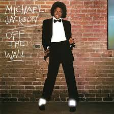

About the King of Pop
Michael Jackson (1958–2009) was one of the most influential entertainers in history. Known worldwide as the King of Pop, he transformed music, dance, and visual performance.
His groundbreaking albums such as Off the Wall, Thriller, and Bad redefined pop music and set global sales records. Thriller remains the best-selling album of all time.
Learn more on his official Wikipedia page .